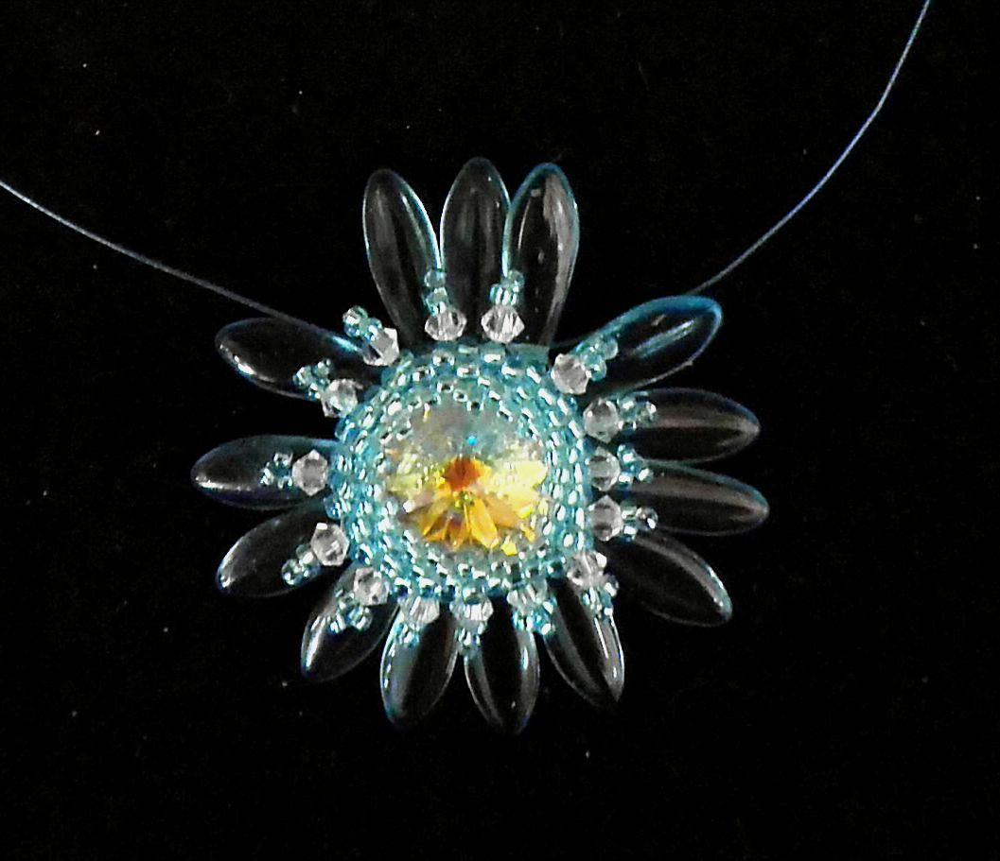

Korálky
Náhrdelníky s komponenty Swarovski
Technikou šitého šperku - spojením mačkaných skleněných korálků, rockailu, Swarovski rivoly a Swarovski broušenými korálky, je vyrobena tato kytička. Barevných kombinací je možno vyrobit nespočet (dle přání zákazníka). Zavěšena je na bižuterním lakovaném lanku, které svou jemností, nenarušuje šperk. Zapínání – karabinka může být jak bižuterní (poniklovaný bižuterní kov), tak je možno na přání dát zapínání stříbrné nebo antialergení. Náhrdelník je možno doplnit náušnicemi ve stejném stylu.
Drátkované šperky
Šperky je možno navlékat také na drátky. Takto vyrobené tvary dobře drží tvar a dají se vytvarovat do prostoru. Nevýhodou je, že se nesmějí často ohýbat, drátek po několikátém ohnutí praskne a šperk je zničen. Vážka je vyrobena ze skleněných korálků rockail a její velikost záleží na zvolené velikosti korálků. Zavěšena je na bižuterním lakovaném lanku, které svou jemností, nenarušuje šperk. Zapínání – karabinka může být jak bižuterní (poniklovaný bižuterní kov), tak je možno na přání dát zapínání stříbrné nebo antialergení. Náhrdelník je možno doplnit náušnicemi ve stejném stylu. Tato vážka může být rovněž vyrobena jako přívěsek nebo sponka či čelenka do vlasů.
Speciální sety
Korálky se dají dobře kombinovat s různými materiály. V létě jsou velmi oblíbené pírkové náušnice pro svoji lehkost a veselou barevnost. Základ náušnic je tvořen kuličkou z korálků, která je doplněna barevně sladěnými pírky (pírka mohou být v nejrůznějším barevném provedení). K náušnicím je vyroben náhrdelník se stejných základních kuliček doplněných pírky. Náušnicové háčky a zapínání náhrdelníku – karabinka mohou být jak bižuterní (poniklovaný bižuterní kov), tak je možno na přání dát háčky a zapínání stříbrné nebo antialergení.
Přívěsky
Milou pozorností – dárkem jsou přívěsky z korálků, jsou vyrobeny ze skleněných mačkaných a broušených korálků. V obou skupinách existuje velká barevná škála, takže kombinacemi vznikají vždy originály. Přívěsek lze zavěsit na mobilní šňůrku (jak je na obrázku) nebo na karabinku. Nedoporučuji přívěsek zavěšovat ke klíčům, jelikož jde o skleněné korálky a ty by se o kovové klíče rozbily.